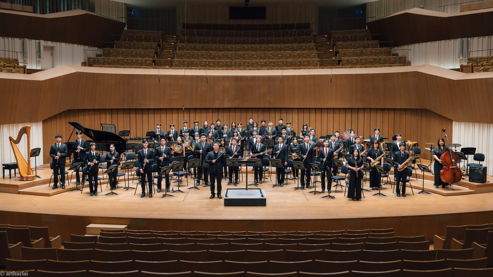

夜幕低垂，說書人化身嚮導，以音符翻開神祕物語。邀請您在星群下，聆聽關於夢與記憶的幻影奇談。

 高雄中學管樂團自日治時期即成立，後從行進樂隊逐步轉型為室內管樂團，為高雄中學歷史最悠久的音樂性學生社團，亦是最具代表性的學生社團之一。社員大多由普通班高一高二在學學生所組成，1986 年本校成立音樂班以來，亦偶有音樂班學生加入管樂團的行列；團員們自動自發利用早自修、社團課程與假日課餘時間練習、互相切磋、精進演奏技藝，藉由音樂來增進社員們的情感，並逐漸發展出具備規模的學生社團組織。
高雄中學管樂團自日治時期即成立，後從行進樂隊逐步轉型為室內管樂團，為高雄中學歷史最悠久的音樂性學生社團，亦是最具代表性的學生社團之一。社員大多由普通班高一高二在學學生所組成，1986 年本校成立音樂班以來，亦偶有音樂班學生加入管樂團的行列；團員們自動自發利用早自修、社團課程與假日課餘時間練習、互相切磋、精進演奏技藝，藉由音樂來增進社員們的情感，並逐漸發展出具備規模的學生社團組織。
2005 年起，本團由湯詩婷老師擔任指導老師，每年暑假定期舉行成果音樂會。2006 年八月正式更名為「高雄中學管樂團」，在校方的大力支持下，不斷充實各方面的樂器及設備，成為第一個可對外代表高雄中學的學生樂團，並於同年九月開辦分部指導課程，使團員的演奏能力大為提升。2011 年至今由何春頤老師接任指導老師，除了將過往優良的文化延續下去外，更為本團開闢出全新的氣象與道路。近年來，管樂團不僅擔任校內各重要典禮的演奏者，也屢次受邀到校外表演並獲得好評。